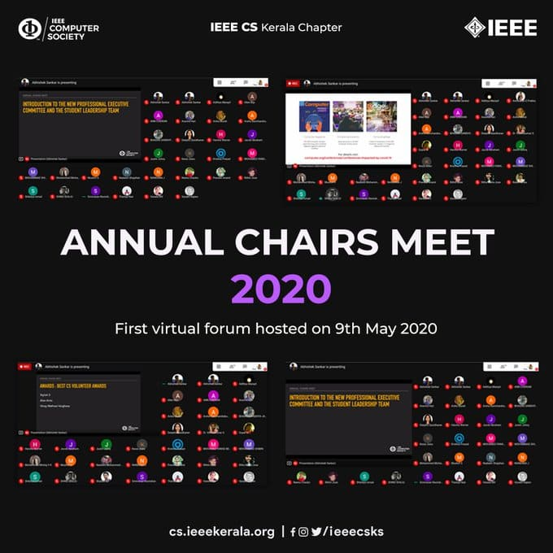

QUARTER II : 2020 |
TECHNICAL ARTICLEDATA SCIENCE and DATA ANALYTICS
Data Science has grown up to a popular term used by Computer Science enthusiast
and Engineering graduates today. What is Data Science? What is Data Analytics? What is the main
difference between these two? What is the role of a data scientist?Data Scientist is a person who works in the field of data science. Unlike an IT professional, data scientist get paid more and also have more work load. Masters in Data Science is now a career option after B. Tech in CSE, where you get a specialization degree. Essentials of Data Science
For being a Data Science expert you don’t actually need to have a degree in the same but rather you can learn it anywhere just like how even Coding doesn’t need a degree. For that you need to know two important essentials- Data Science as a Career
Even though Data Science is not taught as core or elective subject in many of the universities, data science is an important
topic for placements as they hire students with B. Tech degree. Some universities do have subjects like Machine Learning
which can be considered as a subsidiary. Data is the new oil of century. Without data nothing happens. That is why Google, Facebook and Twitter invest so much money in data analytics. Many job opportunities are being generated in this field. So you can think of having a career in Data Science. |
Updates From IEEE Computer Society Kerala ChapterAnnual Chairs Meet 2020

The Annual Chairs Meet (AMC) 2020 was hosted by the IEEE CS Kerala Chapter on 9 May 2020.
The event was successfully conducted online with the aim of improving the involvement of Computer Society Chapter Chairs in planning future activities to benefit the CS Members.
|
||||||
Webinar Series - May
A 4-days webinar series on Data Science and Analytics was organised by IEEE Computer Society Kerala Chapter from May 27, 2020,
to May 30 2020.
This series was conducted with the aim of introducing students into different fields and enhancing their knowledge in various tracks
of data science.
|
||||||
TechThreads
TechThreads with the tagline A Tech Blog to Capture stories from the Tech World is a blogging initiative taken by IEEE Computer Society Kerala Chapter to encourage IEEE student members to express their thoughts and illustrate their ideas in words.
It is a platform to showcase their technical writing skills and abilities in this massive tech-world. |
||||||
Student Branch Events
|
||||||
UPCOMING EVENTSWebinar SeriesTaking the latest trends into consideration, IEEE Computer Society Kerala Chapter will be hosting webinars on the following topics next quarter
|
||||||
Feel free to direct your valuable feedbacks atieeecsks@gmail.com
|